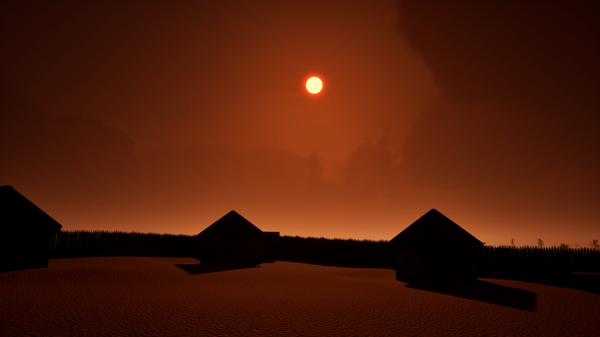
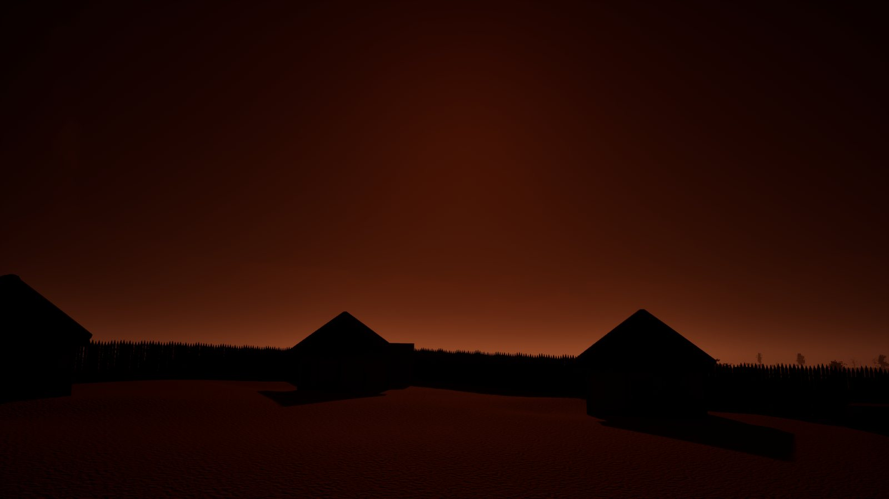
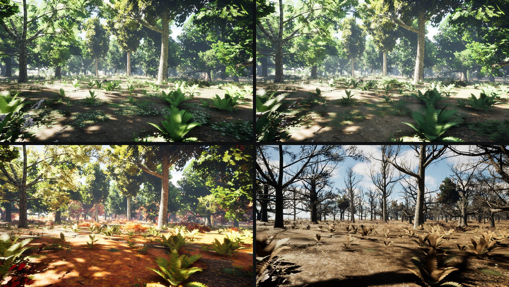
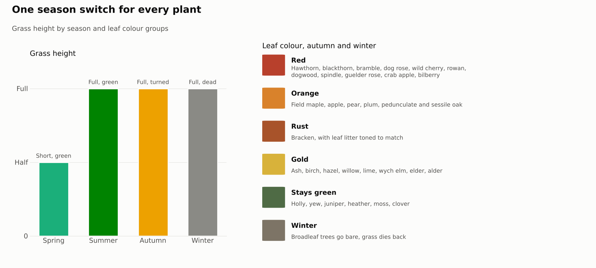
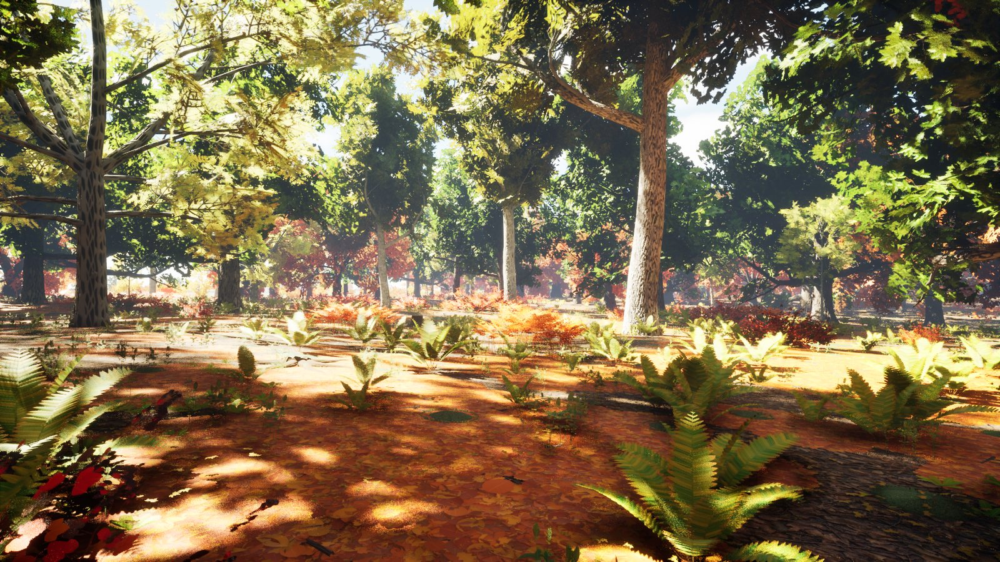
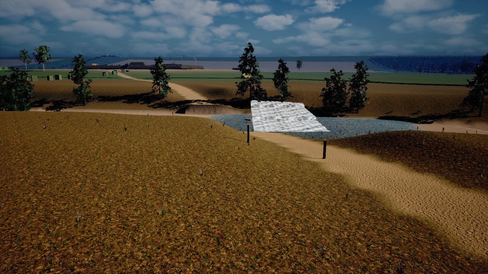
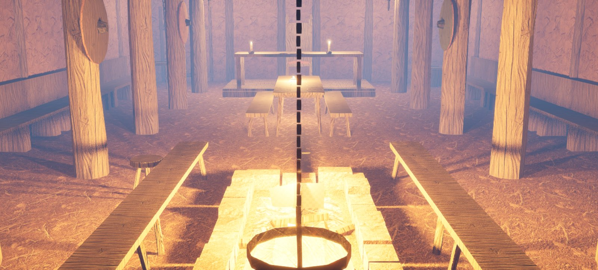

 Ash cloud layer Heavy black ash from 1.5 to 5.3 km, a thin veil always over the sun so it glows red. BuiltIn the hubTuned
 Sun cover passes A heavy cell crosses the sun every 6 to 14 minutes. Light drops to 30 percent, never to black. BuiltIn the hubTuned
Not built yet Thunder Delayed by distance at the speed of sound. Sound asset still to make. BuiltIn the hubTuned
 Season switch One setting turns every plant to spring, summer, autumn or winter and sets the sun's day of the year. BuiltIn the hubTuned
 Grass height by season Spring grass at half height, full from summer. BuiltIn the hubTuned
 Autumn colour groups Red, orange, rust, gold and evergreen groups by species. BuiltIn the hubTuned
 River water Look rebuilt and approved; live simulation around the player, wading and creek beds. Placed on all eleven regions with carved channels, one flow direction per river system and fords at road crossings. BuiltIn the hubTuned
 Firelight Twelve flickering lights in the hall with a shared flicker pattern. BuiltIn the hubTuned
Not built yet Cloud shadows on the ground Darkening now comes from the sky controller; cloud shadow maps still too weak. BuiltIn the hubTuned